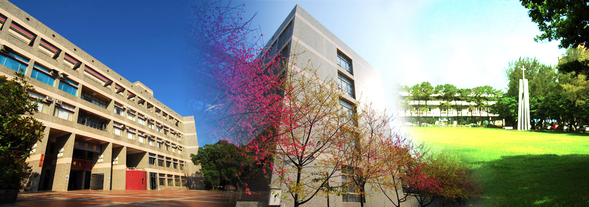
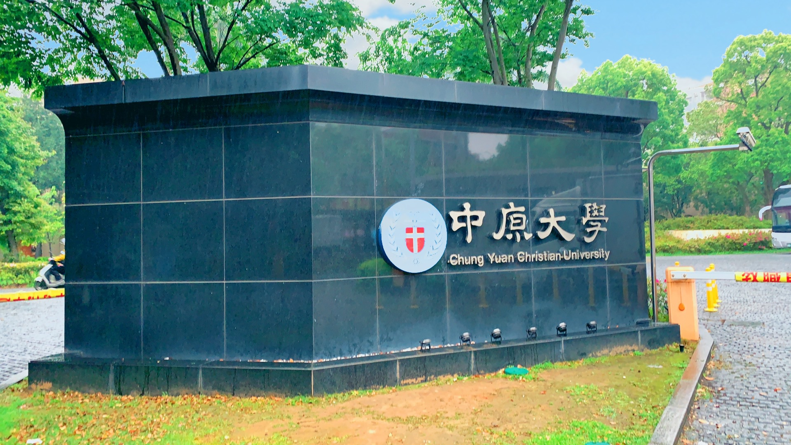

歡迎光臨-中原大學

中原大學，是一所1955年創立於桃園市中壢區的私立大學，為基督徒張靜愚、鈕永建等人首倡設立，初名中壢農工學院，後正式設校更名為中原理工學院。其後改制為中原大學。
創校之初設有物理、化學、化學工程、土木工程4個學系。為部定該校的發展重點。現已成為擁有理、工、電機資訊、法、商、設計、人文與教育等7學院、27學系、25研究所之私立大學。
由於創校歷史悠久，帶動周圍地區的商業發展，故校區周邊形成了頗具規模的中原夜市（中壢區實踐路、日新路一帶）。中原大學的校門因為外型為M型而常被學生稱為麥當勞門或是麵包門，校門已於2012年完成遷移。
瞻望未來，中原除在既有的教育宗旨與理念之精神憲法下，建構「三創教育」－活用創意、激發創新、迎向創業之特色競爭優勢為標的；揭櫫「全人教育」、「生命關懷」及「服務學習」為發展目標；積極培育學生品格精進及國際視野；並以穩健踏實的辦學理念為國內高等教育盡一份心力，全校師生亦在各項表現中展現傑出優異的成果，屢獲產官學界給予肯定之耀眼成績。